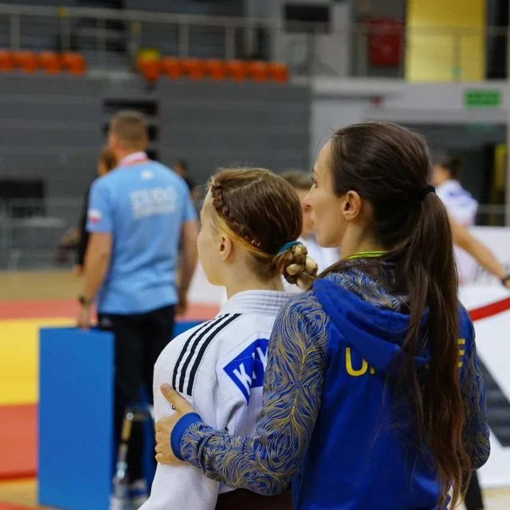

Ксенія Кирильчук
Досягнення
У травні 2024-го стала чемпіонкою України серед дівчат до 16 років у ваговій категорії до 48 кг. У жовтні 2025-го на Кубку Європи серед кадетів у Ризі (Латвія) здобула золоту медаль у ваговій категорії до 52 кг. У фіналі вона зустрілася з віце-чемпіонкою світу U18 і завершила сутичку больовим прийомом на руку. Перемога на континентальному рівні — значне досягнення для її вікової категорії.
-
Інтересні факти
 -
Тренування та клуб Клуб: “Кирильчук Тім” (за інформацією, тренують її батьки). Тренери: батько — Андрій Кирильчук, мама — Катерина Соломянова‑Кирильчук. --- 📌 Інтересні факти На Кубку Європи вона перемогла суперниць, які були старшими за неї за віком. У фіналі турніру застосувала больовий прийом на руку, що демонструє технічну підготовку і волю до перемоги. --- 🔮 Перспективи Ксенія показує, що має значний потенціал — перемоги на молодіжному континентальному рівні відкривають можливості для переходу до юніорських та дорослих змагань. Якщо продовжить у тому ж темпі, може стати однією з провідних спортсменок України в дзюдо.